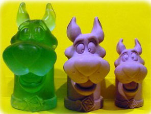

|
ABD
tabanlý Industrial Polymers Corp. tarafýndan geliþtirilen
bu polimer malzeme ile herhangi bir bilgisayar veya talaþlý
imalat teknolojisi gerektirmeden modeller büyültülebiliyor;
Bu sistem, büyültme kabiliyeti olan 3 boyutlu ve bir fotokopi
makinesine benzetilebilir. Nasýl fotokopi makinesinde optik
olarak büyültülen bir resim ard arda fotokopi çekilerek daha
fazla büyültülebiliyorsa, bu yöntemde de bir seferde eriþilen
%60 büyüme kâfi gelmezse modelin yeniden kalýbý alýnýp suda
þiþirilerek ikinci dökümde toplam 2.5 kat büyüme elde edilebilir.
Bu
teknik her ne kadar modelin bir 3D sayýsallaþtýrma cihazý
ile taranýp CAD/CAM sistemleriyle imali kadar hassas, kontrollü
ve hýzlý olmasa da özellikle boyutsal hassasiyetin çok önemli
olmadýðý heykel ve oyuncak gibi ürünlerin büyültülmesi için
yeniden bir model yapmaya gerek býrakmayan pratik ve ucuz
bir çözüm yolu olarak gözükmektedir. Bu teknikle müzelerde
sergilenmek üzere fosiller ve deniz kabuklarý detaydan bir
kayýp olmadan kolaylýkla büyültülebiliriler. Özellikle heykeltraþlar
ve model yapýmcýlarý için bu teknik, saðlayacaðý kolaylýklarla
yeni ufuklar açacaktýr.
Saðdaki
resimde 3 ardýþýk iþlemle toplamda 4 kat büyültülmüþ bir model
görülmektedir. Resimde iþleme baþlanýlan orijinal model görülmemektedir.
Þeffaf yeþil renkli en büyük model suda tamamýyla þiþmiþ orijinal
HydroSpanT malzemesidir. Diðer modeller ise ara kalýplama
yöntemleriyle farklý malzemelerden dökülmüþlerdir. Muhtemelen
modelin içi boþ býrakýlmýþ ve bu sayede daha kýsa sürede su
emme saðlanabilmiþtir. Modelin et kalýnlýðý 5cm olduðu durumda
14 günde tam büyüme gerçekleþirken daha ince cidarlý modellerde
daha kýsa sürede tam büyümeye ulaþýlabilir.
Bu
yöntem 3 defa ardýþýk olarak kullanýlarak gümüþ bir Amerikan
dolarý bir yemek tabaðý boyuna kadar büyültülmüþtür!
Bu
yöntemle bir modeli büyültmek için öncelikle modelin silikon
kalýbý alýnýyor. Silikon kalýp kür olduktan sonra orijinal
model bu kalýptan çýkarýlýp yerine çift komponentli HydroSpanT
karýþýmý dökülüyor. Bu þekilde elde edilen yeni kopya su içinde
bekletilerek istenilen boyuta kadar þiþirilebiliyor. %60'dan
daha az büyüme isteniyorsa model su havuzundan daha erken
çýkarýlabilir. Uzun süre su dýþýnda bekletildiðinde ise bünyedeki
su buharlaþýyor ve zamanla model büyüklüüðü eski ölçülerine
iniyor. Bu sebeple büyümenin kalýcý olabilmesi için modelin
yeni bir silikon kalýplama iþlemiyle kalýcý bir malzemeden
dökülmesi gerekiyor.
Su,
14 günde 2.5 cm derinliðe kadar nüfuz ediyor. Daha ince cidarlý
veya küçük boyutlu modeller daha kýsa sürede büyültülebiliyor.
Et kalýnlýðý 5cm'yi geçen modellerde ise suyun iç bölgelere
rahat eriþimi için modelde delikler açýlmasý tavsiye ediliyor.
HydroSpanT
çift komponentli esenek bir üretan (urethane) polimer malzemedir.
Kokusu yoktur ve tehlikeli deðildir. Çift komponent karýþtýrýldýktan
sonra 10 dakikada kalýba dökülmelidir. Döküm sonrasý 24 saate
kür iþlemi gerçekleþir ve 45 Shore A sertliðe eriþilir. 14
günde oda sýcaklýðýnda su içinde býrakýldýðýnda %60 büyür
ve sertliði 35 Shore A olur.
Daha fazla için:
www.industrialpolymers.com/water_abs_expanding_urethanes.html
|